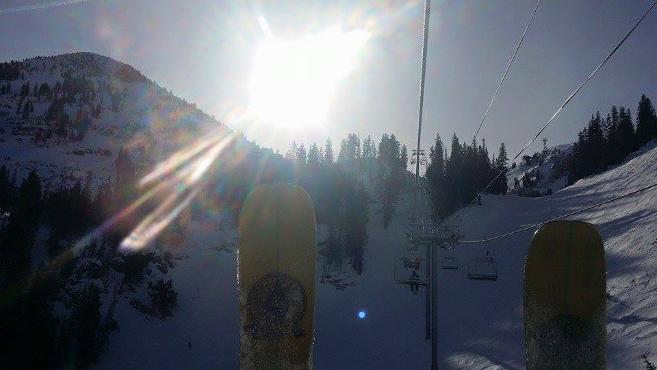

Welcome to Protect Our Mountains
Help Us Put a Stop to the One Wasatch Agenda

We are a group of outdoor enthusiasts (hikers, skiers, rock climbers and cougars) dedicated to preventing Vale Mountain group from ruining our beautiful mountains. The infamous "One Wasatch" agenda is a sinister proposal to dramatically rearrange the landscape, ecosystem and culture of the Wasatch mountain range in order that Texans can travel from condo to condo with minimal effort. Join us, and help thwart this needless and destructive agenda. Together we can keep the mountains wild for many generations to come.